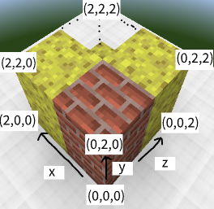

题面
来源：USACO 官网。模型收到的是同一份题面的文字，不含图片。
Farmer John has a block of cheese in the shape of a cube. It lies on the 3-dimensional coordinate plane, extending from $(0,0,0)$ to $(N, N, N)$ ($2 \leq N \leq 1000$). Farmer John will perform a series of $Q$ ($1 \leq Q \leq 2 \cdot 10^5$) update operations to his cheese block.
For each update operation, FJ will carve out the $1$ by $1$ by $1$ block of cheese extending from integer coordinates $(x, y, z)$ to $(x+1, y+1, z+1)$, where $0\le x,y,z<N$. It is guaranteed that there will exist a $1$ by $1$ by $1$ block of cheese at the location FJ carves. Since FJ is playing Moocraft, gravity does not cause parts of the cheese to fall if cheese below is carved.
After each update, output the number of distinct configurations that FJ can stick a $1$ by $1$ by $N$ brick in the cheese block such that no part of the brick overlaps with any remaining cheese. Every vertex of the brick must have integer coordinates in the range $[0,N]$ for all three axes. FJ may rotate the brick however he wants.
INPUT FORMAT (input arrives from the terminal / stdin):
The first line contains $N$ and $Q$.
The following $Q$ lines contain $x$, $y$, and $z$, the coordinates to be carved.
OUTPUT FORMAT (print output to the terminal / stdout):
After each update operation, output an integer, the number of configurations.
SAMPLE INPUT:
2 5 0 0 0 1 1 1 0 1 0 1 0 0 1 1 0
SAMPLE OUTPUT:
0 0 1 2 5After the first three updates, the $1\times 2 \times 1$ brick spanning $[0, 1]\times [0, 2]\times [0, 1]$ does not overlap with the remaining cheese, so it contributes toward the answer.

SCORING:
- Inputs 2-4: $N\le 10$ and $Q \le 1000$
- Inputs 5-7: $N\le 100$ and $Q \le 1000$
- Inputs 8-16: No additional constraints
Problem credits: Chongtian Ma, Alex Liang
结果
Kimi K3.1 ProKimi
1/1
解出的采样 ↑
- 100采样 1 · 解出
- 1.3k平均输出 token（含思考） ↓
- 34.4输出速度 tokens/s ↑
- 40 秒延迟 ↓
- 0.29×CPU 时间 / 官方解 ↓
- 同阶时间复杂度（相对官方解）
- 2Pylint 问题 ↓
- 9.41Pylint 得分 ↑
- 6圈复杂度 ↓
- 67.5可维护性指数 ↑
DeepSeek Flash V4.1-1017DeepSeek
1/1
解出的采样 ↑
- 100采样 1 · 解出
- 4.2k平均输出 token（含思考） ↓
- 209.7输出速度 tokens/s ↑
- 21 秒延迟 ↓
- 0.32×CPU 时间 / 官方解 ↓
- 更优时间复杂度（相对官方解）
- 4Pylint 问题 ↓
- 8.89Pylint 得分 ↑
- 6圈复杂度 ↓
- 63.8可维护性指数 ↑
MiniMax M3.1 FlashMiniMax
1/1
解出的采样 ↑
- 100采样 1 · 解出
- 6.5k平均输出 token（含思考） ↓
- 183.0输出速度 tokens/s ↑
- 36 秒延迟 ↓
- 0.31×CPU 时间 / 官方解 ↓
- 更优时间复杂度（相对官方解）
- 2Pylint 问题 ↓
- 9.46Pylint 得分 ↑
- 7圈复杂度 ↓
- 67.3可维护性指数 ↑
↑ 越大越好，↓ 越小越好。得分 0–100，按官方时限判定，所有测试点都满分才算解出。CPU 时间 / 官方解为解出的答案在官方解最慢的 3 个测试点上的 CPU 时间之比（几何平均），只比较官方解至少需要 0.05 秒的题；复杂度按增长幂次相对官方解分类。判题与计分见 原理。
代码
import sys def main(): data = sys.stdin.buffer.read().split() if not data: return it = iter(data) n = int(next(it)) q = int(next(it)) size = n * n # Number of carved cells in each line parallel to the x, y, and z axes. lines_x = [0] * size # indexed by (y, z) lines_y = [0] * size # indexed by (x, z) lines_z = [0] * size # indexed by (x, y) answer = 0 output = [] for _ in range(q): x = int(next(it)) y = int(next(it)) z = int(next(it)) i = y * n + z lines_x[i] += 1 if lines_x[i] == n: answer += 1 i = x * n + z lines_y[i] += 1 if lines_y[i] == n: answer += 1 i = x * n + y lines_z[i] += 1 if lines_z[i] == n: answer += 1 output.append(str(answer)) sys.stdout.write("\n".join(output)) if __name__ == "__main__": main()
import sys from array import array def solve(): data = list(map(int, sys.stdin.buffer.read().split())) if not data: return N = data[0] Q = data[1] size = N * N cnt_x = array('H', [0]) * size # removed count for lines parallel to x cnt_y = array('H', [0]) * size # removed count for lines parallel to y cnt_z = array('H', [0]) * size # removed count for lines parallel to z ans = 0 out = [] idx = 2 for _ in range(Q): x = data[idx] y = data[idx + 1] z = data[idx + 2] idx += 3 p = y * N + z cnt_x[p] += 1 if cnt_x[p] == N: ans += 1 p = x * N + z cnt_y[p] += 1 if cnt_y[p] == N: ans += 1 p = x * N + y cnt_z[p] += 1 if cnt_z[p] == N: ans += 1 out.append(str(ans)) sys.stdout.write("\n".join(out)) if __name__ == "__main__": solve()
import sys from array import array def solve(): read = sys.stdin.buffer.readline write = sys.stdout.write n, q = map(int, read().split()) size = n * n # Number of carved cells in each line parallel to the given axis. parallel_x = array('H', [0]) * size # Indexed by (y, z) parallel_y = array('H', [0]) * size # Indexed by (x, z) parallel_z = array('H', [0]) * size # Indexed by (x, y) answer = 0 output = [] for _ in range(q): x, y, z = map(int, read().split()) # The removed cell belongs to one line in each orientation. index = y * n + z count = parallel_x[index] + 1 parallel_x[index] = count if count == n: answer += 1 index = x * n + z count = parallel_y[index] + 1 parallel_y[index] = count if count == n: answer += 1 index = x * n + y count = parallel_z[index] + 1 parallel_z[index] = count if count == n: answer += 1 output.append(str(answer)) if len(output) == 8192: write("\n".join(output) + "\n") output.clear() if output: write("\n".join(output) + "\n") if __name__ == "__main__": solve()